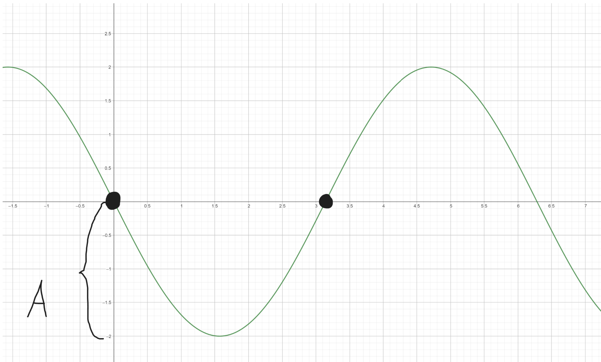
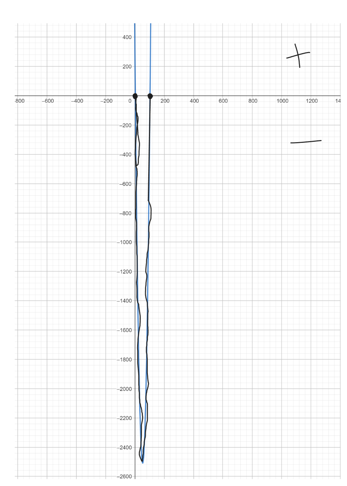
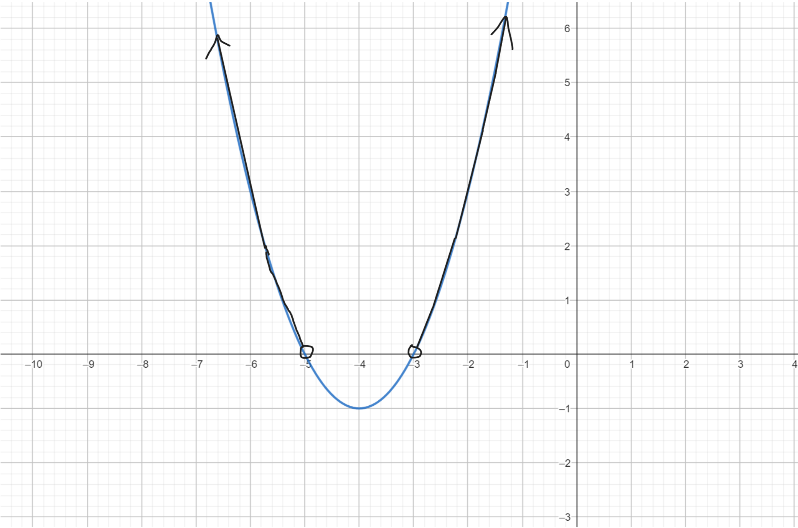

(3b) Binární operace \(*\) je definovaná jako \(a*b=\frac{a+b}{a-b}\). Určete hodnotu neznámé \(x\) tak, aby \((2*x)*3=-2\)
\[x \neq 2 \land x \neq 1\] \[\frac{\frac{2+x}{2-x}+3}{\frac{2+x}{2-x}-3}=-2\] \[\frac{2+x}{2-x}+3=-2*(\frac{2+x}{2-x}-3)\] \[\frac{2+x}{2-x}+3=\frac{-4-2x}{2-x}+6\] \[2+x+3*(2-x)=-4-2x+6*(2-x)\] \[2+x+6-3x=-4-2x+12-6x\] \[8-2x=8-8x\] \[0=-6x\] \[x=0\]
(3b) Při koupi dvou párů bot dostaneme slevu 30% na druhý pár. Chceme koupit boty za 1800 a 1500 korun. Jaká je nejmenší cena za kterou můžeme oba páry získat?
Dražší boty získají větší slevu v korunách. \[1800*0,7=1260\] \[1500+1260=2760\]
(3b) Pokud bude o víkendu hezky, budeme večer grilovat. Pokud o víkendu nebude hezky, půjdeme do muzea. Rozhodněte, které tvrzení je pravdivé.
Pokud bude o víkendu hezky, budeme večer grilovat. \(H \Rightarrow G\) 1 1 je pravda
Pokud o víkendu nebude hezky, půjdeme do muzea. \( \lnot H \Rightarrow M\) 0 1 je pravda
A) \(G \Rightarrow \lnot M\) 1 0 není pravda
B) \( \Leftrightarrow M \land G\) 1 1 1 je to sice pravda, ale podle zadání to nedává smysl
C) ----
D) \( \lnot G \Rightarrow M\) 0 1 je pravda
E) \( M \Rightarrow \lnot G\) 1 0 není pravda
(7b) Mějme tři čísla zapsaná v sedmičkové soustavě: \(1456_7\), \(1526_7\) a \(4345_7\). Vyjádřete jejich součet také v sedmičkové soustavě.
\[ \begin{array}{ccccc} \ & 1 & 4 & 5 & 6_7 \\ \ & 1 & 5 & 2 & 6_7\\ \ & 4 & 3 & 4 & 5_7\\ \hline\\ 1 & 0 & 6 & 6 & 3_7\\ \end{array} \]
(7b) Pro řešení rovnice \( \frac{ \log_{3}(9x)^2}{\log_{3}(81x^2)}=\frac{3}{2}\)
\[ \frac{ \log_{3}(9x)^2}{\log_{3}(81x^2)}=\frac{3}{2} \] \[ \frac{ (\log_{3}(9) + \log_{3}(x))^2}{\log_{3}((9x)^2)}=\frac{3}{2} \] \[ \frac{ (\log_{3}(3^2) + \log_{3}(x))^2}{\log_{3}((9x)^2)}=\frac{3}{2} \] \[ \frac{ (\log_{3}(3^2) + \log_{3}(x))^2}{2\log_{3}(|9x|)}=\frac{3}{2} \] je definované v rozsahu \[ \frac{ (\log_{3}(3^2) + \log_{3}(x))^2}{2\log_{3}(9x)}=\frac{3}{2} \] \[ \frac{ 4 + 4\log_{3}(x) + \log_{3}(x)^2}{2\log_{3}(9x)}=\frac{3}{2} \] \[ \frac{ 4 + 4\log_{3}(x) + \log_{3}(x)^2}{2( \log_{3}(9) + \log_{3}(x) )}=\frac{3}{2} \] \[ \frac{ (\log_{3}(3^2) + \log_{3}(x))^2}{2( \log_{3}(3^2) + \log_{3}(x) )}=\frac{3}{2} \] \[ \frac{ \log_{3}(3^2) + \log_{3}(x)}{2}=\frac{3}{2} \] \[ \frac{ 2 + \log_{3}(x)}{2}=\frac{3}{2} \] \[ 2 + \log_{3}(x)=3 \] \[ \log_{3}(x)=1 \] \[ x=3^1 \] \[ x=1 \]
(7b) Plavecký bazén si vede měsíční statistiky. Jedna čtvrtina návštěvníků chodí do bazénu alespoň dvakrát týdně a jedna pětina z nich dokonce denně. Jedna pětina všech návštěvníků chodí jedenkrát týdně. Ostatní návštěvníci chodí několikrát do měsíce, ale nepravidelně. Každý desátý návštěvník se po první návštěvě víckrát nevrátí. Rozhodněte, které tvrzení je pravdivé.
\(\frac{1}{4}x\) 2x týdně z nich \(\frac{1}{4}\) (\(\frac{1}{20}x\)) 1x denně
\(\frac{1}{5}x\) 1x týdně
Pravidelně \(\frac{1}{4}+\frac{1}{5}=\frac{5+4}{20}=\frac{9}{20}=45\)%
\(\frac{1}{10}x\) 1
\(100-45-10=45=\frac{9}{20}x\) ostatní několikrát do měsíce
Nepravidelně \(55\)%
(7b) Jsou dány dvě množiny \(A = \{ 2 \sin(x-π)|x \in \langle 0,π\rangle\} \) a \(B = \{ x||x-1|\geq1\}\). Průnikem množin A a B je
\(2 \sin \) obor hodnot je \( \langle -2,2 \rangle\) a graf je posunutý + π na ose x
(7b) Nalezněte řešení rovnice a rozhodněte, které tvrzení je pravdivé. \(|2x-1|-|2-3x|=5\)
Nulové body: \( x_1=\frac{1}{2}\), \(x_2=\frac{2}{3}\) \[ \begin{array}{|c|c|c|c|} \hline\\ \ & (-∞,\frac{1}{2}) & ⟨\frac{1}{2},\frac{2}{3} & (\frac{2}{3},∞) \\ \hline\\ \ |2x-1|& \boldsymbol{-} & + & \boldsymbol{+} \\ \hline \ |2-3x|& \boldsymbol{+} & + & \boldsymbol{-} \\ \hline \end{array} \]
1. Řešení pro \(x\in(-∞,\frac{1}{2})\) \[-(2x-1)+[-(2-3x)]=5\] \[-2x+1-2+3x=5\] \[x-1=5\] \[x=6\] Neleží v intervalu
2. Řešení pro \(x\in \langle \frac{1}{2},\frac{2}{3}\rangle\) \[-(2x-1)+[-(2-3x)]=5\] \[-2x+1-2+3x=5\] \[5x-3=5\] \[5x=8\] \[x=\frac{8}{5}\] Neleží v intervalu
3. Řešení pro \(x\in (\frac{2}{3},∞)\) \[-(2x-1)+[-(2-3x)]=5\] \[-x+1=5\] \[-x=4\] \[x=-4\] Neleží v intervalu
(7b) Určete počet všech sudých čísel, která vyhovují nerovnici \(\frac{1}{2}x^2-53x+150 \leq 0\).
\[\frac{1}{2}x^2-53x+150 \leq 0\] \[1x^2-106x+300 \leq 0\] \[D = 106^2-4*1*300=11230-1200=10036\] \[\sqrt{10036}=100,...\] \[\frac{106 \pm 100,...}{2}\] \[x_1 = \frac{5,...}{2}=2,...\] \[x_2 = \frac{206,...}{2}=103,...\]
Interval celých čísel je \(\langle 3,103 \rangle\)
Uděláme rozdíl \(103-3 = 100\) 100 možných čísel
když to vydělíme 2 tak dostaneme počet sudých čísel což je 50
(7b) Které z následujících tvrzení o definičním oboru funkce \(f(x)=\frac{\ln(x^2+8x+15)}{\sqrt{2-x}}\) je pravdivé?
Jmenovate nesmí být 0. Odmocnina nesmí být záporná. \[2-x>0\] \[-x>-2\] \[x<2\] \[A \in (-∞,2)\]
Přirozneý logaritmus musí být větší než 0. \[x^2+8x+15 > 0\] \[D= 64-4*1*15=4\] \[\frac{-8\pm2}{2}\] \[x_1=\frac{-6}{2}=-3\] \[x_2=\frac{-10}{2}=-5\]
\[B \in (-∞,-5) \cup (-3,∞)\]
\[A \cap B = (-∞,-5) \cup (-2,∞)\]
(7b) Nekonečná spirála se skládá z půlkružnic. Poloměr první půlkružnice je 3 cm a poloměr každé další je třikrát menší než poloměr předcházející půlkružnice. Vypočtěte délku l spirály.
\[a_1 = 3\] \[q = \frac{1}{3}\]
Vzorec na součet nekonečné geometrické řady: Řada je konvergentní. \[ \vert q\vert < 1\] \[s_n=\frac{a_1}{1-q}\]
\[s_n=\frac{3}{1 - \frac{1}{3}}\] \[s_n=\frac{3}{\frac{2}{3}}\] \[s_n=3 \frac{3}{2}\] \[s_n=\frac{9}{2}𝝅 cm\]
(7b) Nalezněte obor hodnot funkce \(f(x)=2 \sin (3x-\frac{π}{2})-4\).
\(2\sin\) nám říká, že obor hodnot funkce sinus bude 2x větší (sin(x) obor hodnot je \(\langle1,-1\rangle\))
\(-4\) posun celé funkce o -4 na ose y
\(3x-\frac{π}{2}=>3x\) funkce sinus se nám v intervalu \(\langle0,2π\rangle\) objeví 3x, ale k určení oboru hodnot nám to nepomůže
\(3x-\frac{π}{2}=>x=\frac{π}{2}\) posun grafu o \(\frac{π}{2}\) na ose x, ale k určení oboru hodnot nám to nepomůže
Takže posun o -4 a budeme mít při základní funkci sin(x) obor hodnot \(\langle-3,-5\rangle\), potom zvětšíme funkci 2x obor hodnot je \(\langle-2,-6\rangle\)
(7b) Určete hodnoty reálného parametru p tak, aby rovnice \(p^2(2x-8)+p(x^2-6x+8)+4x-x^2=0\) méla jediné řešení, a rozhodněte, které tvrzení je pravdivé.
\[p^2(2x-8)+p(x^2-6x+8)+4x+x^2=0\] \[2xp^2-8p^2+x^2p-6xp+8p+4x+x^2=0\] \[x^2(p-1)+x(2p^2-6p+4)-8p^2+8p=0\] \[p \neq 1\] \[\] \[D=(2p^2-6p+4)^2-4(p-1)(-8p^2+8p)=\] \[=4p^4-12p^3+8p^2-12p^3+36p^2-24p+8p^2-24p+16-4(-8p^3+8p^2+8p^2-8p)=\] \[=4p^4+8p^3-12p^2-16p+16\] \[\] \[p^4+2p^3-3p^2-4p+4=0\] \[p^4-p^3+3p^3-3p^2-4*(p-1)=0\] \[p^3(p-1)+3p^2(p-1)-4*(p-1)=0\] \[(p-1)(p^3+3p^2-4)=0\] \[(p-1)(p^3-p^2+4p^2-4)=0\] \[(p-1)(p^2*(p-1)+4(p^2-1))=0\] \[(p-1)(p^2(p-1)+4(p-1)(p+1))=0\] \[(p-1)(p-1)(p^2+4(p+1))=0\] \[(p-1)(p-1)(p^2+4p+4)=0\] \[(p-1)(p-1)(p+2)^2=0\] \[(p-1)^2(p+2)^2=0\] \[(p-1)^2=0\] \[(p+2)^2=0\] \[p_1=-2✔\] \[p_2=1×\]
(7b) Dětský tábor má kapacitu 80 dětí. Vytvoří-li děti trojice, nikdo nezbude; vytvoří-li dvojice, zbude jedno dítě. Vytvoří-li sedmice, nikdo nezbude; vytvoří-li čtveřice, zbudou tři děti. Kolik zbude dětí, vytvoří-li šestice?
Bude se jednat o číslo od 1 do 80
63 % 6 = 3
(7b) Ve skupině je 10 dětí z nich každé má jiné jméno než ostatní. Jsou mezi nimi i Hana a Jana. Kolika způsoby lze vybrat 5 dětí tak, aby mezi nimi byla alespoň jedna z dívek (Hana a Jana)?
Alespoň jedna z dívek => 1 a 2
\[\binom{8}{4}=70\] \[70*2 = 140\]
\[\binom{8}{3}=56\] \[140+56=196\]
(7b) Jaká je pravděpodobnost, že při dvou hodech stejnou šestibokou kostkou bude součet obou hodů 9?
Můžeme si vypsat všechny možnosti hodu kostky a hledat kdy se součet 2 hodů rovná 9.
Druhá možnost je jít od 1-6 a snažit se hledat, aby nám čísla dávaly dohromady 9: \[1+6 = 7\] \[2+6=8\]
\[3+6=9\] a při změně pořádí mámé druhou
\[4+5=9\] a při změně pořádí mámé druhou možnost
a ty další čísla pro (5,6) už jsou ty čísla v opačném pořadí
Máme ted 4 možnosti
Máme 2 kostky o 6 stranách. 6 * 6 = 36
\[\frac{4}{36}=\frac{1}{9}\]